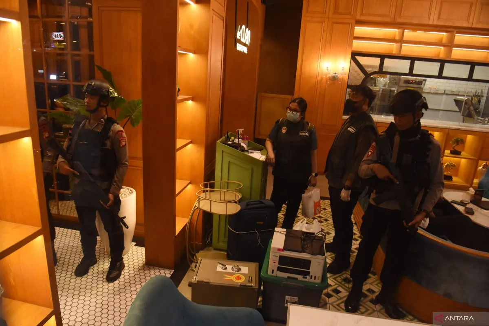

Berbagai peristiwa penting di bidang hukum terjadi pada Rabu, 8 Juli 2026. Beberapa di antaranya menjadi perhatian publik karena berkaitan dengan pemberantasan korupsi, penegakan hukum di Papua, pengawasan terhadap hakim, hingga proses penyidikan oleh Komisi Pemberantasan Korupsi (KPK).
1. Polri Menyita Uang Hampir Rp60 Miliar dari Kafe di Jakarta Selatan
Korps Pemberantasan Tindak Pidana Korupsi (Kortastipidkor) Polri bersama Polda Metro Jaya melakukan penggeledahan di sebuah kafe di kawasan Cipete, Jakarta Selatan. Dalam operasi tersebut, penyidik menyita uang tunai dalam berbagai mata uang dengan nilai mencapai hampir Rp60 miliar.
Barang bukti yang disita terdiri atas jutaan dolar Singapura, ratusan ribu dolar Amerika Serikat, serta uang rupiah. Penggeledahan ini merupakan bagian dari penyidikan dugaan tindak pidana korupsi dan tindak pidana pencucian uang yang berkaitan dengan beberapa perkara besar, termasuk dugaan korupsi di PT PLN, PT Asabri, serta PT Krakatau Steel. Aparat kepolisian menegaskan bahwa seluruh proses penyidikan dilakukan secara profesional, proporsional, dan sesuai ketentuan hukum.
2. Tujuh Orang Ditetapkan sebagai Tersangka Penembakan Pilot di Yahukimo
Satuan Tugas Operasi Damai Cartenz-2026 menetapkan tujuh orang sebagai tersangka dalam kasus pembunuhan pilot berkewarganegaraan Amerika Serikat, Kapten Nicholas F. Goselin, sekaligus pembakaran pesawat milik PT Associated Mission Aviation (AMA) di Kabupaten Yahukimo, Papua Pegunungan.
Penetapan tersangka dilakukan setelah penyidik mengumpulkan berbagai alat bukti, termasuk keterangan saksi, hasil olah tempat kejadian perkara, serta barang bukti lainnya. Aparat menyatakan proses penyidikan masih terus berlangsung untuk mengungkap seluruh pihak yang terlibat dalam peristiwa tersebut.
3. Tim Hukum Nadiem Makarim Akan Melapor ke Badan Pengawas Mahkamah Agung
Tim kuasa hukum Nadiem Makarim menyampaikan rencana untuk melaporkan empat hakim Pengadilan Tindak Pidana Korupsi pada Pengadilan Negeri Jakarta Pusat kepada Badan Pengawas Mahkamah Agung (Bawas MA).
Sebelumnya, keempat hakim tersebut juga telah dilaporkan kepada Komisi Yudisial atas dugaan pelanggaran kode etik selama proses persidangan. Menurut tim kuasa hukum, langkah tersebut dilakukan sebagai bentuk upaya memperoleh pengawasan terhadap dugaan pelanggaran etika hakim, bukan untuk mencampuri substansi putusan pengadilan.
4. Pengadilan Negeri Indramayu Menjatuhkan Vonis Mati
Majelis Hakim Pengadilan Negeri Indramayu menjatuhkan pidana mati dengan masa percobaan selama sepuluh tahun kepada terdakwa Ririn Rifanto dalam perkara pembunuhan berencana terhadap lima anggota satu keluarga di Kabupaten Indramayu.
Majelis hakim menyatakan terdakwa terbukti secara sah dan meyakinkan melakukan pembunuhan berencana serta tindak kekerasan terhadap anak yang mengakibatkan korban meninggal dunia. Putusan tersebut dijatuhkan setelah mempertimbangkan fakta-fakta yang terungkap selama persidangan.
5. KPK Memanggil Pejabat LPEI sebagai Saksi
Komisi Pemberantasan Korupsi (KPK) memanggil Kepala Divisi Penjaminan dan Trade Finance Lembaga Pembiayaan Ekspor Indonesia (LPEI), Sylvia Sandyazmara Devi, sebagai saksi dalam penyidikan dugaan tindak pidana korupsi terkait pemberian fasilitas kredit oleh LPEI.
Pemeriksaan ini merupakan bagian dari upaya KPK untuk mengumpulkan keterangan dan alat bukti dalam proses penyidikan guna mengungkap dugaan penyimpangan yang terjadi dalam pemberian fasilitas pembiayaan tersebut.